RealSeparated
Created Monday 10 June 2013
Non-ideal separation of phases in a volume with low flow speed. Separation is gravity-driven and allocation of outgoing mass flows to the two zones is related to the geometry and the filling level.
1. Purpose of Model
Typical applications of this replaceable model are:
- phase separating in condensing heat exchangers
- phase separation in storage tanks, e.g. feedwater tank
- phase separation in steam drums
- phase separation in steam separators
2. Level of Detail and Physical Effects Considered
2.1 Level of Detail
Referring to Brunnemann et al. [1], this model refers to the level of detail L3 because it assumes an applying model of L3 featuring a fixed number (two) of distinct zones.
2.2 Physical Effects Considered
- separating phases in a volume with an arbitrary number of inlet and outlet flanges
- shock-free phase transitions
- super-critical fluid states
3. Limits of Validity
- when load changes imply significant changes of the phase interaction then the validity of the model is questionable
4. Interfaces
5. Nomenclature
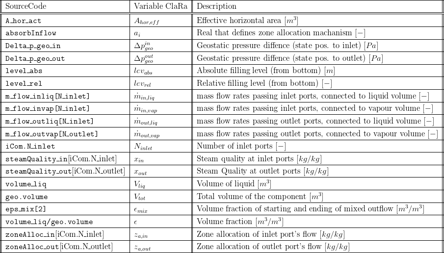
6. Governing Equations
6.1 Allocation of incoming and outgoing mass flows to the liquid and vapour volume, respectively
In general, it can be assumed that the non-ideal separation process takes a certain time, depending on the mass and heat exchange between the phases, see figure below. These phenomena are taken into account in two-zonal control volumes with an arbitrary number of inlet and outlet ports. The task of the present model is to correlate the flow conditions at the ports with the two zones present in the model. This is also referred to as zone allocation which means that any incoming or outgoing mass flow has to be allocated to one of the two zones present in the model introducing the mass and enthalpy flows to the relevant energy and mass balances for the zones.
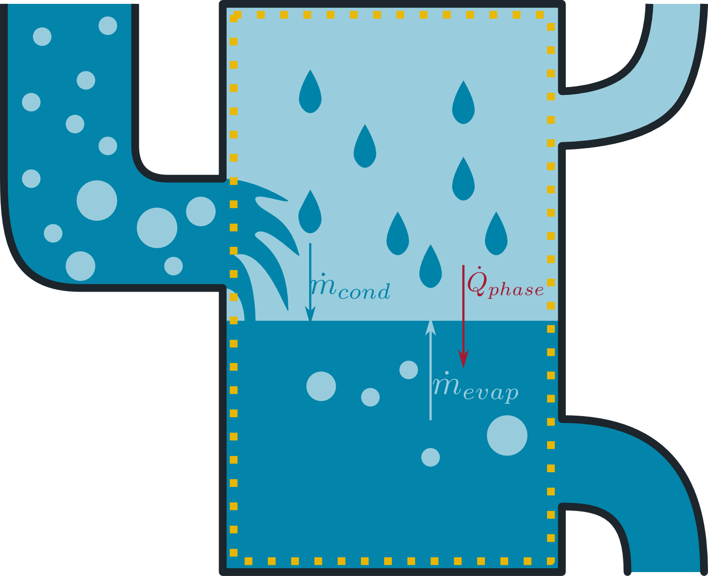
Mass flows entering through the inlet or the outlet ports are allocated depending to the geometrical position of the relevant flanges or according to the steam quality. This mechanism of zone allocation is defined by the Real parameter absorbInflow which ranges from 0 to 1. absorbInflow = 1 means pure allocation according to the filling level and the geometric position of the ports. absorbInflow = 0 means ideal separation of wet steam and allocation of the dewing vapour and boiling liquid fraction to the vapour and liquid zone, respectively.
This results in the following distinct cases:
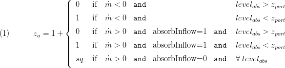
The above cases with positive (incoming) mass flow provide some flexibility in terms of zone allocation. This is illustrated below. The above equation evaluate the parameter absorbInflow () which ranges from 0 to 1 with the borders written above. However, in some cases it might be numerically advantageous to set a value 0 < < 1 which gives the following zone allocation of a wet steam flow: One part of the inflow is allocated according to geometric considerations, i.e. the wet steam enters the vapour zone if the liquid level is below the respective port else the wet steam enters the liquid zone. Note that this mass flow fraction enters the zone without regard of the steam quality of the steam fraction. The second part (1-) is ideally separated into boiling liquid and dewing steam before entering the vessel. Afterwards the dewing steam is allocated to the vapour zone while the boiling liquid is allocated to the liquid zone.
This zone allocation of incoming flows strongly refers to the homogeneity of an entering two-phase flow: Imagine the incoming wet steam is a very good mixture of tiny droplets and bubbles. In that case it is assumed that the mass flow enters the zone according to the geometry: If the inlet flange is above the filling level then the whole mass flow will go into the volume and if the flange is below the filling level the mass flow enters the liquid volume. These first two cases of equation 1 are illustrated below. Please note that due to symmetry of the equations the above equation hold for both inlet and outlet ports. Therefore outflow through an inlet flow will be handled accordingly.
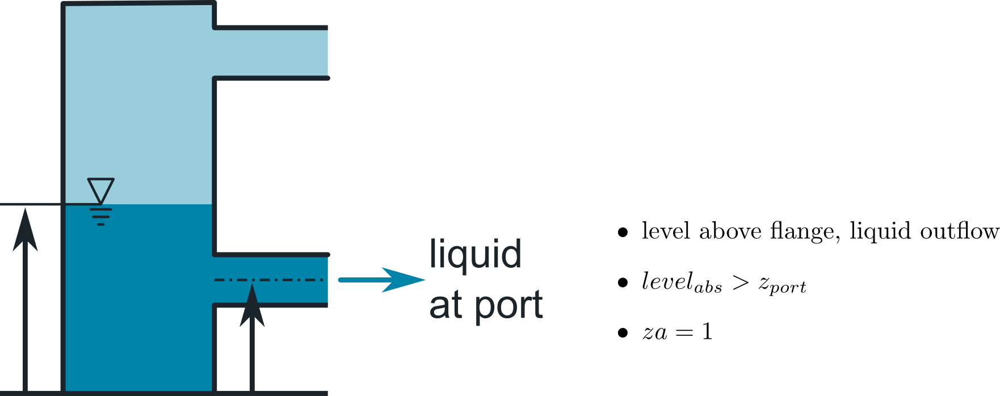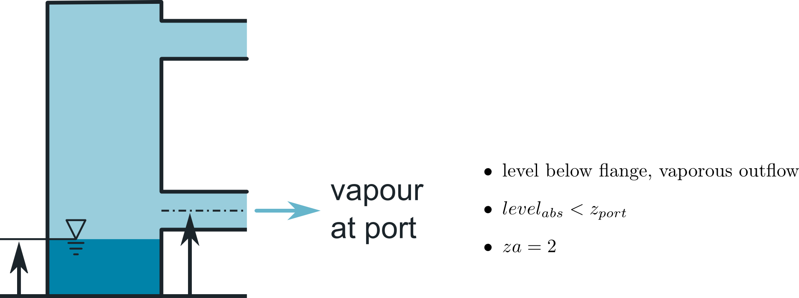
The difference between case 4 and case 5 is illustrated below (case 3 is similar to left figure, with swapped phases). Imagine an inflow of liquid that transports large vapour bubbles. You assume that both , the liquid and vapour fraction of the mass flow shall enter the vapour volume as the flange is located above the filling level. In that case the condensation of the incoming vapour is subject to the control volume's condensation and evaporation model. This setting refers to figure 3 below. However, you might also expect that the incoming vapour remains in the vapour zone while the liquid fraction goes directly to the liquid volume which refers to the figure 4 below. Again, back flow through the ports is supported applying symmetrical equations.
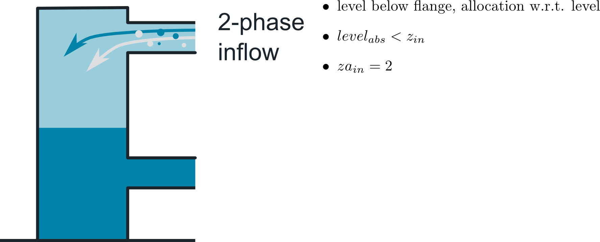 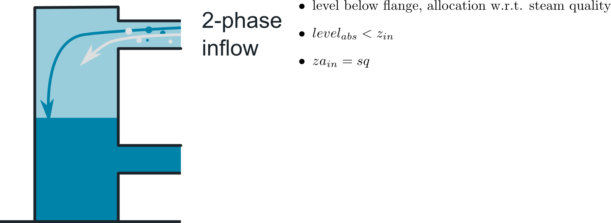
For the sake of numerical robustness the Basics:Functions:Stepsmoother is applied to implement the above distinction of cases which leads to a principal behavior as illustrated below.
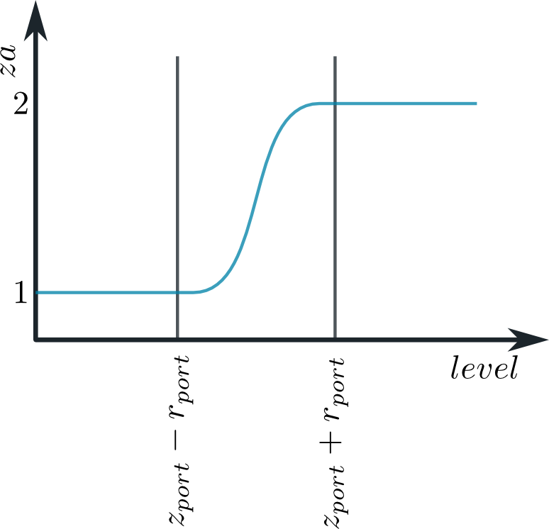
Based on the zone allocation za the entering and leaving mass flows at the ports are allocated to the two zones by introducing zone related (or phase related) mass flow rates:
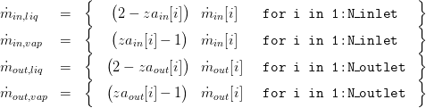
These zone-related mass flows are to be used in the applying model.
6.2 Determination of the Filling Level
In order to derive a general form of filling level determination a concept based on pre-calculated geometry shapes is chosen here. The basic idea is to calculate the level from the liquid volume and an effective horizontal area. Thus, the actual, absolute filling level is defined as

For prismatic geometries like a vertically oriented cylinder or a block-shaped basin the effective horizontal area is a constant. In other cases, e.g. a horizontal oriented cylinder, this area depends on the level itself. It is then defined as
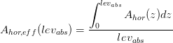
Obviously, the effective horizontal area is specific for every form of geometry. In order to keep the approach as general as possible the 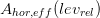 are pre-calculated and stored in the table shape. Thus, the effective horizontal area is calculated via

with the relative filling level

and the parameters and 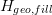 being a reference values for the horizontal area and the filling level, respectively.
7. Remarks for Usage
To be combined with two-zonal control volumes with an arbitrary number of inlet and outlet ports. This model's energy and mass balances get access to the mass flow rates  .
.
8. Validation
9. References
[1] Johannes Brunnemann and Friedrich Gottelt, Kai Wellner, Ala Renz, André Thüring, Volker Röder, Christoph Hasenbein, Christian Schulze, Gerhard Schmitz, Jörg Eiden: "Status of ClaRaCCS: Modelling and Simulation of Coal-Fired Power Plants with CO2 capture", 9th Modelica Conference, Munich, Germany, 2012
10. Authorship and Copyright Statement for original (initial) Contribution
Author:
DYNCAP/DYNSTART development team, Copyright 2011 - 2020.
Remarks:
This component was developed during DYNCAP/DYNSTART projects.
Acknowledgements:
ClaRa originated from the collaborative research projects DYNCAP and DYNSTART. Both research projects were supported by the German Federal Ministry for Economic Affairs and Energy (FKZ 03ET2009 and FKZ 03ET7060).
CLA:
The author(s) have agreed to ClaRa CLA, version 1.0. See https://claralib.com/CLA
By agreeing to ClaRa CLA, version 1.0 the author has granted the ClaRa development team a permanent right to use and modify his initial contribution as well as to publish it or its modified versions under Modelica License 2.
11. Version History
- 07.11.2013 - 0.1 - initial implementation - Friedrich Gottelt, XRG Simulation
- 22.03.2016 - 0.2 - improved handling of incoming wet steam (when absorbInflow < 1 and 0 < steamQuality < then inlet flow is first (partly) separated into vapour and liquid and then added to the respective zone. Previously, the inflow was separated according to the steam quality but to both zones wet steam was added) - Friedrich Gottelt, XRG Simulation
- 26.03.2019 - 1.4.0 - applied smoothing to geodatic pressure difference calculation - Timm Hoppe, XRG Simulation
Backlinks: ClaRa:Components:HeatExchangers:HEXvle2gas L3 2ph BU simple ClaRa:Components:HeatExchangers:HEXvle2vle L3 2ph BU ntu ClaRa:Components:HeatExchangers:HEXvle2vle L3 2ph BU simple ClaRa:Components:HeatExchangers:HEXvle2vle L3 2ph CH ntu ClaRa:Components:HeatExchangers:HEXvle2vle L3 2ph CH simple ClaRa:Components:HeatExchangers:HEXvle2vle L3 2ph CU ntu ClaRa:Components:HeatExchangers:HEXvle2vle L3 2ph CU simple ClaRa:Components:MechanicalSeparation:Bottle L3 ClaRa:Components:MechanicalSeparation:Drum L3 ClaRa:Components:MechanicalSeparation:FeedWaterTank L3 ClaRa:Components:MechanicalSeparation:SteamSeparatorVLE L3 ClaRa:Basics:ControlVolumes:FluidVolumes:VolumeVLEGas L3 ClaRa:Basics:ControlVolumes:FluidVolumes:VolumeVLE L3 TwoZones ClaRa:Basics:ControlVolumes:FluidVolumes:VolumeVLE L3 TwoZonesNPort